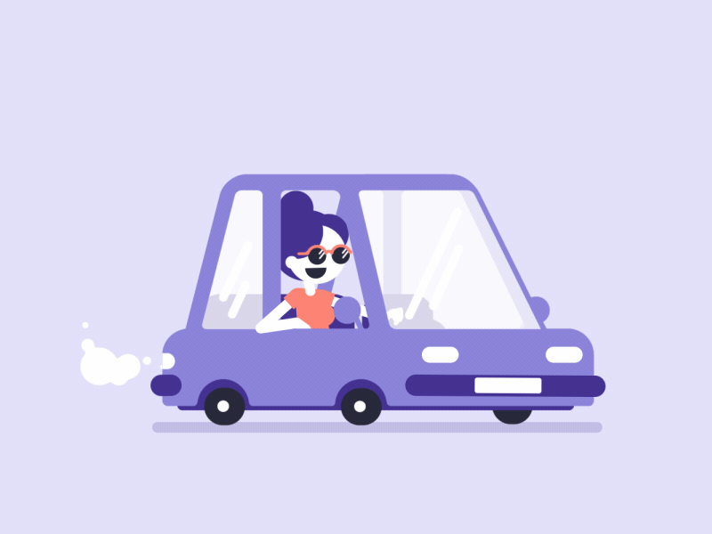

Dogname has decided to follow to people walking around a corner in the distance to hopefully find help! But an animal control van pulls up beside Dogname! Dogname tries to sneak away quietly and follow the walking people but the animal control officer spots them and grabs his net to catch Dogname. Dogname quickly runs towards the group of people hoping to lose the animal control officer chasing them. While catching up to the people Dogname sees an abandoned barn on their right! Should Dogname run and hide in the abandoned barn or run across the road to hopefully gain some distance from the animal control officer?